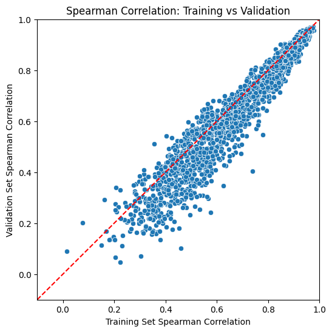

Cell2Net Model Evaluation with Correlation Analysis#
This tutorial demonstrates how to evaluate the performance of trained Cell2Net models by analyzing prediction correlations between observed and predicted gene expression values.
Overview#
After training Cell2Net models for individual genes, we need to systematically evaluate their performance using correlation metrics. This notebook:
Loads Predictions: Retrieves saved predictions from trained Cell2Net models
Computes Correlations: Calculates Spearman correlations between true and predicted expression
Visualizes Performance: Creates scatter plots comparing training vs. validation correlations
Generates Reports: Saves detailed correlation results for downstream analysis
Statistical Framework#
We use Spearman correlation because:
Rank-based: Robust to outliers and non-linear transformations
Distribution-free: No assumptions about data normality
Monotonic relationships: Captures ordered relationships between variables
Standard metric: Widely used in genomics for expression prediction evaluation
import warnings
warnings.filterwarnings("ignore")
import os
import mudata as md
import pandas as pd
import numpy as np
import seaborn as sns
from scipy.stats import spearmanr
import matplotlib.pyplot as plt
md.set_options(pull_on_update=False)
<mudata._core.config.set_options at 0x7fa00c2c5070>
2. Setup File Paths and Output Directory#
Define input and output directories for the correlation analysis:
input_data: Path to the prepared multiome dataset (from tutorial step 2)
in_dir: Directory containing trained Cell2Net models and predictions (from tutorial step 3)
out_dir: New directory for correlation analysis results
This organized structure ensures:
Reproducibility: Clear separation of analysis steps
Data traceability: Easy tracking of input dependencies
Result organization: Systematic storage of correlation metrics and visualizations
input_data = "./02_prepare_data/mdata.h5mu"
in_dir = './03_train_cell2net'
out_dir = './04_get_correlation'
os.makedirs(out_dir, exist_ok=True)
3. Load Data and Gene List#
Load the multiome dataset and extract the list of target genes for correlation analysis:
mdata: Complete multiome object with RNA/ATAC data and peak-to-gene associations
genes: List of genes that have trained Cell2Net models available
The gene list corresponds exactly to the models trained in the previous step, ensuring consistency between training and evaluation phases. Each gene in this list has sufficient regulatory data (peak-to-gene associations) to support reliable model training and evaluation.
mdata = md.read_h5mu(input_data)
genes = mdata.uns['peak_to_gene']['gene'].unique().tolist()
4. Compute Correlations for All Genes#
This is the main analysis loop that processes predictions for each trained gene model and computes correlation metrics:
Data Loading#
For each gene, we load the .npz files containing:
Training predictions: Model outputs on the 80% training set
Validation predictions: Model outputs on the 20% held-out validation set
True values: Actual gene expression measurements from RNA-seq
Correlation Computation#
We calculate Spearman correlation coefficients between predicted and observed expression:
Training correlation: Measures how well the model fits the training data
Validation correlation: Assesses model generalization to unseen data
Statistical significance: Spearman correlation provides robust, non-parametric measure
Output Generation#
For each gene, we save:
Individual CSV files: Detailed predictions with true/predicted values for further analysis
Summary statistics: Training and validation correlations compiled across all genes
Performance Interpretation#
High training correlation (>0.7): Model successfully learned regulatory patterns
Similar validation correlation: Good generalization, low overfitting
Low correlations (<0.3): Gene may have complex regulation not captured by current features
Training >> Validation: Potential overfitting, model may be too complex
This systematic evaluation provides comprehensive assessment of Cell2Net model performance across the PBMC gene regulatory landscape.
train_corrs = []
valid_corrs = []
for gene in genes:
data = np.load(f'{in_dir}/prediction/{gene}.npz')
train_pred = data['train_pred']
train_true = data['train_true']
valid_pred = data['valid_pred']
valid_true = data['valid_true']
# save results
df_train = pd.DataFrame({
'true': train_true,
'pred': train_pred
})
df_valid = pd.DataFrame({
'true': valid_true,
'pred': valid_pred
})
df_train['data'] = 'train'
df_valid['data'] = 'valid'
df = pd.concat([df_train, df_valid], axis=0)
df.to_csv(f'{out_dir}/{gene}.csv', index=False)
# compute correlation using scipy
train_corr = spearmanr(train_true, train_pred).correlation
valid_corr = spearmanr(valid_true, valid_pred).correlation
train_corrs.append(train_corr)
valid_corrs.append(valid_corr)
df = pd.DataFrame({
'gene': genes,
'train_corr': train_corrs,
'valid_corr': valid_corrs
})
5. Visualize Model Performance#
Create a comprehensive scatter plot to visualize Cell2Net model performance across all genes:
Plot Elements#
X-axis: Training set Spearman correlations - how well models fit training data
Y-axis: Validation set Spearman correlations - how well models generalize
Diagonal line: Perfect training-validation agreement (y = x)
Data points: Each point represents one gene’s model performance
Performance Interpretation#
Ideal Performance (Upper Right):
High training and validation correlations (>0.6)
Points near diagonal line indicate good generalization
These genes have strong, learnable regulatory patterns
Overfitting (Below Diagonal):
Training correlation > Validation correlation
Models learned training-specific noise
May need regularization or simpler architecture
Underfitting (Lower Left):
Low correlations on both training and validation
Models failed to capture regulatory relationships
May need more complex features or longer training
Well-Regulated Genes (Consistent Performance):
Similar training and validation correlations
Reliable regulatory predictions
Good candidates for biological interpretation
This visualization provides immediate assessment of model quality and helps identify genes with reliable regulatory predictability in the PBMC immune system.
# plot the correlations
plt.figure(figsize=(6, 6))
sns.scatterplot(x='train_corr', y='valid_corr', data=df)
plt.title('Spearman Correlation: Training vs Validation')
plt.xlabel('Training Set Spearman Correlation')
plt.ylabel('Validation Set Spearman Correlation')
plt.plot([-1, 1], [-1, 1], 'r--')
plt.xlim(-0.1, 1)
plt.ylim(-0.1, 1)
plt.show()

6. Save Correlation Summary#
Save the comprehensive correlation analysis results to CSV format for downstream analysis and reporting:
Applications of Saved Results#
Quality Control:
Identify genes with poor predictability for exclusion from downstream analysis
Assess overall Cell2Net performance across the PBMC transcriptome
Compare performance across different cell types or conditions
Biological Discovery:
High-correlation genes likely have strong regulatory control mechanisms
Low-correlation genes may represent complex regulatory networks or technical limitations
Performance patterns may reveal regulatory complexity across immune cell programs
Method Comparison:
Benchmark Cell2Net against other gene expression prediction methods
Evaluate impact of different feature sets or model architectures
Assess improvement from pre-training and transfer learning approaches
Downstream Analysis:
Prioritize high-confidence predictions for regulatory network construction
Filter results for transcription factor analysis and motif enrichment
Select reliable predictions for experimental validation studies
This systematic evaluation provides the foundation for interpreting Cell2Net results and guides subsequent regulatory genomics analyses.
df.to_csv(f'{out_dir}/gene_correlation.csv', index=False)